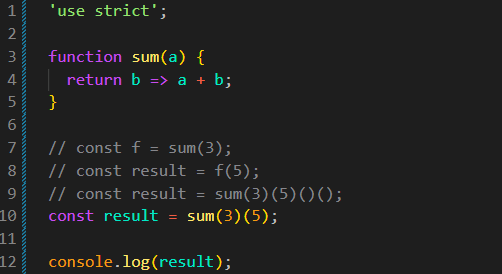
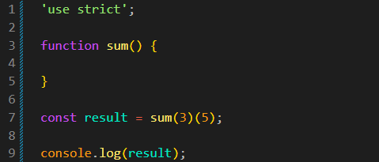
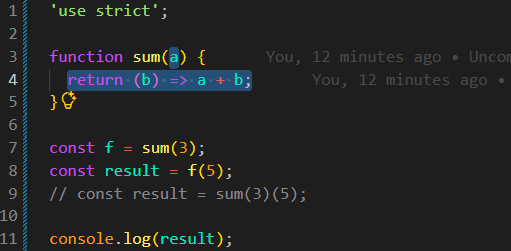
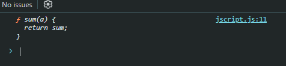

Agora iremos conhecer outra construção de funções que pode parecer um pouco confusa no início: chamar uma função usando vários pares de parênteses.
Para entender como isso funciona, precisamos saber que uma função pode retornar outra função. Assim, podemos chamar a função retornada usando um novo par de parênteses.
Código de Exemplo:
JS:

Entendendo Melhor
Iremos começar criando uma função chamada sum. Em seguida, criaremos uma constante chamada result para receber o resultado de duas chamadas de função, passando os valores 3 e 5.
function sum() {
}
const result = sum(3)(5);
console.log(result);

Ao executar esse código, receberemos um erro no DevTools:
Uncaught TypeError: sum(...) is not a function
A mensagem sum(...) is not a function significa que o resultado de sum(3) não é uma função. Como a função sum está vazia, ela retorna undefined por padrão.
Para entender melhor, podemos separar as duas chamadas em duas linhas:
function sum() {
}
const f = sum(3);
const result = f(5);
// const result = sum(3)(5);
console.log(result);
A primeira chamada, sum(3), é executada e seu resultado é armazenado na constante f. Como a função não possui um return, o valor de f será undefined.
Ao tentar executar f(5), receberemos outro erro:
Uncaught TypeError: f is not a function
O que queremos fazer com essa função é basicamente somar os valores 3 e 5.
Para isso, precisamos ajustar a função sum. Primeiro, adicionaremos um parâmetro chamado a, que receberá o valor 3 quando a função for chamada.
Depois, precisamos retornar uma nova função. Essa função receberá o segundo valor, que será armazenado no parâmetro b, e realizará a soma entre a e b.
O código ficará da seguinte forma:
function sum(a) {
return (b) => a + b;
}
const f = sum(3);
const result = f(5);
// const result = sum(3)(5);
console.log(result);

Agora o resultado será 8. Isso acontece porque a primeira chamada, sum(3), retorna uma função que guarda o valor de a como 3. Quando chamamos essa função com f(5), o valor de b será 5.
A expressão a + b será executada como 3 + 5, retornando 8.
Também podemos escrever as duas chamadas na mesma linha:
const result = sum(3)(5);
O resultado será o mesmo, pois as chamadas são executadas na mesma ordem: primeiro sum(3) e depois a função retornada recebe o valor 5.
Em JavaScript, uma função pode retornar uma referência para si mesma. Isso permite chamar a mesma função novamente usando outro par de parênteses.
Exemplo:
function sum(a) {
return sum;
}
// const f = sum(3);
// const result = f(5);
const result = sum(3)(5)()();
DevTools

Nesse exemplo, a função sum retorna a própria função, ou seja, a referência para sum. Por isso, podemos chamá-la novamente.
A chamada sum(3)(5)()() executa a função várias vezes. Como a função retorna a si mesma em todas as chamadas, cada novo par de parênteses funciona.
É importante distinguir chamadas com parâmetros de chamadas sem parâmetros. Uma chamada como sum(3) passa o valor 3 para a função. Já () executa a função sem passar argumentos.
Uma função pode retornar outra função ou retornar a si mesma. O que determina se podemos usar outro par de parênteses é o valor retornado pela chamada anterior: ele precisa ser uma função.
Em situações reais, não é muito comum usar vários pares de parênteses dessa maneira. Porém, essa construção pode ser útil para criar funções que recebem argumentos em etapas. Alguns programadores também a utilizam para escrever chamadas encadeadas de forma mais compacta.